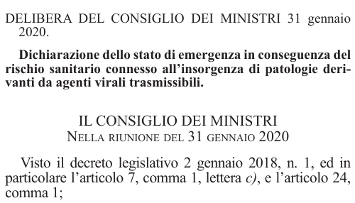
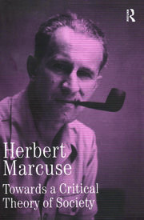

1:16:00 · 9 OPERE
Herbert Marcuse: il destino storico della democrazia borghese.
Il filo del discorso
La lettura commentata del saggio The Historical Fate of Bourgeois Democracy permette a Dr Divago di interrogare il rapporto fra democrazia, capitalismo e possibilità di cambiamento. Marcuse scrive dopo la rielezione di Nixon del 1972: interpreta il consenso a un governo impegnato nella guerra del Vietnam come problema politico e morale, e teme una trasformazione regressiva delle istituzioni. Il testo fu composto circa nel 1972–1973 e pubblicato postumo nel 2001; il relatore confonde il momento della scrittura con quello della pubblicazione. Nixon era il trentasettesimo presidente, rieletto nel 1972. Dr Divago apre con un appello alla lettura lenta, contrapponendola alla moltiplicazione delle opinioni e alle interpretazioni che considera neutralizzanti. Proietta poi la critica marcusiana sulle politiche pandemiche e sul presente europeo. Il paragone è una sua scelta interpretativa: Marcuse non descriveva eventi del 2020, e le analogie con fascismo e nazismo non dimostrano l’equivalenza fra contesti storici diversi. Anche l’idea che informazione e opposizione siano integralmente controllate rimane una tesi del commento. Il percorso segue i rapporti fra aperture diplomatiche a Cina e URSS, concentrazione economica, guerra e dipendenza delle ex colonie. Il discorso di commiato di Eisenhower introduce il complesso militare industriale; la distinzione fra welfare e warfare state rende visibile la domanda su chi benefici della spesa e dell’organizzazione della produzione. La distensione del 1972 non coincide con la fine della Guerra fredda, né basta a spiegare tutte le successive delocalizzazioni mediante un’unica intenzione politica. La parte centrale considera sovranità popolare, identificazione con i governanti, indebolimento dei ceti medi e responsabilità dei cittadini. Le polemiche del relatore su politici italiani e tedeschi accompagnano la lettura, ma compensi per conferenze e accuse di plagio non sono convertiti in illeciti accertati. I richiami ad Alice Miller restano senza titolo identificato; Fromm, Tempi moderni e Viaggio al termine della notte offrono invece riferimenti riconoscibili per discutere autorità interiorizzata, lavoro e autonomia personale. Le categorie psicologiche non diventano diagnosi degli elettori o delle vittime di violenza. La conclusione recupera il compito educativo di piccoli gruppi e individui, il ruolo del dissenso e il problema di preservare le libertà. Il monito finale di Marcuse riguarda la difficoltà di arrestare un eventuale fascismo nelle società capitalistiche avanzate, dopo una sconfitta storica ottenuta attraverso la guerra mondiale: non afferma che un ritorno del fascismo sia impossibile. Il dialogo con quel testo invita così a distinguere critica, previsione e prova, mantenendo aperta la domanda sulla capacità di agire politicamente.
I libri nel discorso

Delibera del Consiglio dei ministri del 31 gennaio 2020: Dichiarazione dello stato di emergenza in conseguenza del rischio sanitario connesso all’insorgenza di patologie derivanti da agenti virali trasmissibili
Identificazione probabile
Estratto della delibera · G.U. 1 febbraio 2020, p. 7: Estratto documentario della Gazzetta Ufficiale, Serie Generale 26 del 1 febbraio 2020, pagina 7(PDF 11): intestazione, data 31 gennaio 2020, titolo e primo richiamo normativo della delibera20A00737. Non è una copertina o la riproduzione integrale dell’atto, che prosegue a pagina 8.
Porzione della sola colonna destra dell’originale PDF ufficiale. L’atto adiacente è escluso. Codice 20A00737 alla pagina 8 e data pubblicazione 1 febbraio 2020 verificati separatamente. Rendering diretto 144 dpi, 500 × 286, senza padding, ricomposizione o alterazioni testuali.
A 255.78–266.7 s la fonte nomina il 31 gennaio 2020 e a 266.7–272.92 s lo definisce data della delibera del governo. Non pronuncia il titolo ufficiale o il codice dell’atto. L’identificazione del preciso provvedimento resta una collazione dagli estremi e dal contesto.
Passaggio 4:15 ↗ · Fonti e libro ↗
The Historical Fate of Bourgeois Democracy
Copertina: Copertina della raccolta Towards a Critical Theory of Society, Collected Papers of Herbert Marcuse, volume 2, Routledge 2001, ISBN 9780415137812. Contenitore del saggio, non copertina autonoma.
Immagine autentica della raccolta contenente il contributo. Nessun secondo record per il contenitore; esemplare in video non confermato.
riconoscimento_vocale_locale
Passaggio 4:45 ↗ · Fonti e libro ↗
Discorso di commiato alla nazione (Farewell Address), 17 gennaio 1961
Prima pagina del comunicato originale del discorso di commiato del 1961: White House · comunicato stampa del 17 gennaio 1961 · prima pagina
Prima pagina renderizzata dal PDF originale del comunicato conservato dalla biblioteca presidenziale. È un documento d’archivio, non una copertina di libro. PDF originale e relativa impronta conservati privatamente.
riconoscimento_vocale_locale
Passaggio 19:51 ↗ · Fonti e libro ↗
A World Split Apart (Discorso di Harvard)
Identificazione probabile
Copertina: Harper & Row · edizione bilingue russo e inglese · 1978
Immagine autentica dell’opera, controllata visivamente; l’edizione di riferimento non è attribuita al filmato.
riconoscimento_vocale_locale
Passaggio 27:30 ↗ · Fonti e libro ↗
Costituzione degli Stati Uniti d’America
Identificazione probabile
Copertina della raccolta: Testo firmato il17settembre1787. Per l’immagine si usa la raccolta Penguin Classics The Federalist Papers, ISBN9780140444957, che dichiara di includere il testo della Costituzione; non è una fotografia della pergamena originaria.
Copertina autentica di The Federalist Papers: la descrizione editoriale attesta che la raccolta comprende il testo completo della Costituzione. Non è il frontespizio costituzionale del1787 e Hamilton, Madison e Jay non sono presentati come unici autori del documento.
riconoscimento_vocale_locale
Passaggio 45:52 ↗ · Fonti e libro ↗Studien über Autorität und Familie. Sozialpsychologischer Teil
Identificazione probabile
Copertina: Copertina della raccolta digitale Analytische Sozialpsychologie, Erich Fromm, a cura di Rainer Funk, Open Publishing / Estate of Erich Fromm 2016, ISBN ePUB 9783959121408. L’indice comprende il contributo del 1936; non edizione originaria né copertina autonoma.
Immagine autentica della raccolta contenente il contributo. Nessun secondo record per il contenitore; esemplare in video non confermato.
riconoscimento_vocale_locale
Passaggio 1:01:44 ↗ · Fonti e libro ↗
Fuga dalla libertà
Copertina: Mondadori, 2022
riconoscimento_vocale_locale
Passaggio 1:02:02 ↗ · Fonti e libro ↗
Tempi moderni (Modern Times)
Immagine ufficiale di Tempi moderni: Film del 1936 scritto, diretto, prodotto e interpretato da Charles Chaplin, con Paulette Goddard. Immagine ufficiale di catalogo.
Fotografia in bianco e nero fornita dal sito Chaplin: Charlot e un altro operaio fra gli ingranaggi. Non è una copertina di libro né una locandina con testo. La prima miniatura di 80 × 80 pixel è stata respinta e sostituita con il file principale di 450 × 600.
riconoscimento_vocale_locale
Passaggio 1:02:47 ↗ · Fonti e libro ↗
Viaggio al termine della notte
Copertina: Corbaccio · 2011
Copertina autentica controllata visivamente. Edizione di riferimento; non identifica l’esemplare usato o citato nel video.
riconoscimento_vocale_locale
Passaggio 1:03:25 ↗ · Fonti e libro ↗